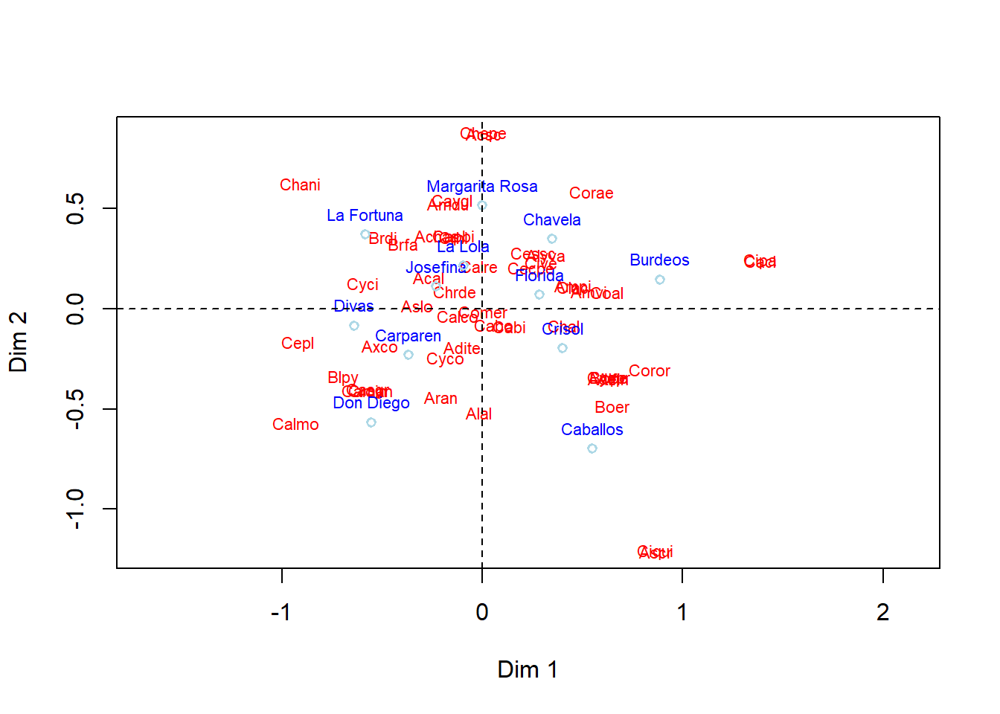
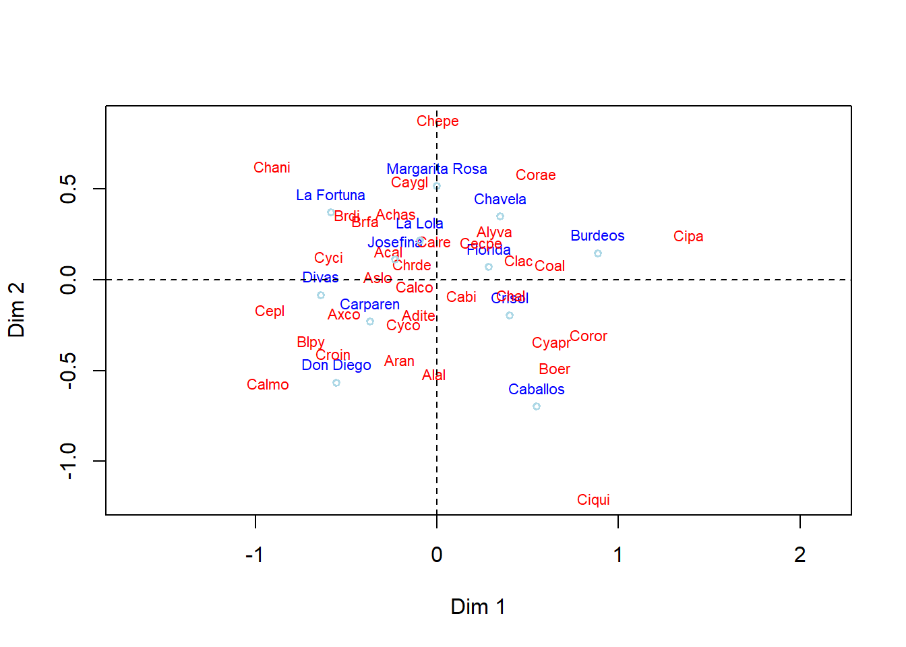
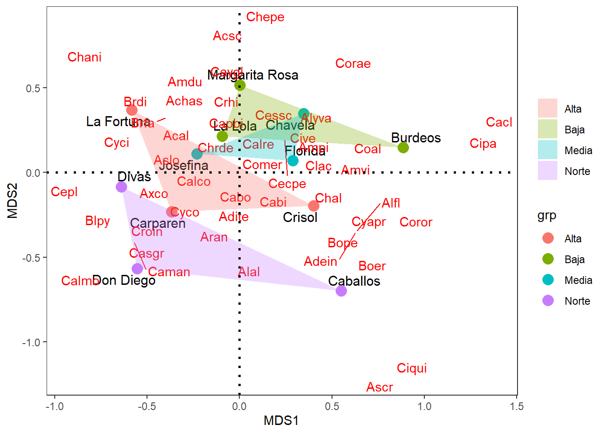

# Librerías requeridas
library (ade4)
require(vegan)
library(analogue)
library(magrittr)
library(dplyr)
library(ggpubr)
library(vegan)
library(ggplot2)
library(ggrepel)Taller 5.1 Análisis de Escalamiento Multidimensional no Métrico - NMDS
Datos de malezas en cultivos de Banano
Exploración gráfica multivariada - base malezas
Objetivo de la actividad:
La siguiente base de datos, corresponde a una muestra de 50 especies de malezas asociadas a cultivos de banano en cuatro localidades del Departamento del Magdalena (Regiones Alta, Norte, Media y Baja), basado en la composición y abundancia de estas especies vegetales. Estos datos fueron tomados del estudio realizado por Quintero-Pertuz et al., 2020) y solo representan a una parte de los taxones registrados (en total fueron 202 especies). Se utilizará el siguiente archivo como base de datos: maezas.csv
Ejercicio tomado de: Rodríguez-Barrios (2023) Enlace del libro
Enlace de los archivos del libro
Procedimiento de la exploración
Cargar librerías requeridas
Cargar la base
malezas.csvCorrer el NMDS con una distancia binaria (Jaccard)
Realizar las opciones gráficas con las librerías
"vegan"y"ggplot2".
Cargar las librerías requeridas
Cargar o importar la base de datos
# Base de datos
datos<-read.csv2("malezas.csv",row.names=1)
1) Ordenación de las localidades y las especies de malezas.
Se prsenta un estrés de 0.13 (13%) con la distancia binaria de Jaccard.
# 1. 1) Ordenación con el nmds
datos.nmds <- metaMDS(datos[,3:52],trace = FALSE,distance = "jaccard")
datos.nmds
Call:
metaMDS(comm = datos[, 3:52], distance = "jaccard", trace = FALSE)
global Multidimensional Scaling using monoMDS
Data: datos[, 3:52]
Distance: jaccard
Dimensions: 2
Stress: 0.1362424
Stress type 1, weak ties
Best solution was repeated 3 times in 20 tries
The best solution was from try 3 (random start)
Scaling: centring, PC rotation, halfchange scaling
Species: expanded scores based on 'datos[, 3:52]'
2) Figuras del nmds con el paquete “vegan”
2.1 nMDS con solapamiento de taxones
La figura muestra la ordenación de las especies de malezas con las localidades evaluadas. Muchas de las especies quedan solapadas enn la figura, en la siguiente figura se aplicará un comando para eliminar el solapamiento.
x11()
fig=plot(datos.nmds, type = "t",display = c("n", "species"),
ylab="Dim 2", xlab="Dim 1", cex=0.7,shrink = FALSE)
# Texto
text(datos.nmds, display="sites", labels = as.character(datos$Finca),
cex=0.7, col="blue", lwd=1.5, pos=3)
# Puntos *opcionales
points(datos.nmds, display = "sites",cex = 0.8,
col = "lightblue", lwd=1.5)
# plano cartesiano
abline(h=0,lty=2)
abline(v=0,lty=2)
2.2 Ordenación con el comando “orditorp”
La figura elimina el solapamiento de las especies con el comando orditorp. Las especies de malezas son graficadas en rojo y las fincas en color azul.
x11()
fig=plot(datos.nmds, type = "n",display = c("n", "species"),
ylab="Dim 2", xlab="Dim 1", ex=0.7,shrink = FALSE)
#
text(datos.nmds, display="sites", labels = as.character(datos$Finca),
cex=0.7, col="blue", lwd=1.5, pos=3)
#
ordi=orditorp(datos.nmds, display = "species",
shrink = FALSE, col = "red", type="n")
#
points(datos.nmds, display = "sites",cex = 0.7,
col = "lightblue", lwd=1.5)
abline(h=0,lty=2)
abline(v=0,lty=2)
#—-
3) NMDS con paquete ggplot2
A continuación se utilizarán las coordenadas de las regiones, las fincas y las especies de malazas, para graficarlas con el paquete ggplot2, debido a que muestra unas imágenes más didácticas y compactas. El siguiente comando - names(datos.nmds), permite visualizar los insumos del escalamiento multidimensional realizado.
# Correr nuevamente el nMDS
names(datos.nmds) [1] "nobj" "nfix" "ndim" "ndis" "ngrp"
[6] "diss" "iidx" "jidx" "xinit" "istart"
[11] "isform" "ities" "iregn" "iscal" "maxits"
[16] "sratmx" "strmin" "sfgrmn" "dist" "dhat"
[21] "points" "stress" "grstress" "iters" "icause"
[26] "call" "model" "distmethod" "distcall" "data"
[31] "distance" "converged" "tries" "bestry" "engine"
[36] "species"
3.1 Coordenadas de los sitios y el factor “coord.sit”
Con el siguiente comando - datos.nmds$points, se extraen las coordenadas de los sitios y con el comando datos$Región se obtienen la columna del factor región.
# 1) Coordenadas de los sitios y el factor (coord.sit)
coord.sit <- as.data.frame(datos.nmds$points) # Coordenadas de los sitios
coord.sit$sitio <- rownames(coord.sit) # Crear una columna con nombres de los sitios
coord.sit$grp <- datos$Región # Adicionar columna de grupos por región
head(coord.sit) # vista resumida de las coordenadas de stios MDS1 MDS2 sitio grp
ACa -0.368865506 -0.2302085 ACa Alta
ACr 0.400345208 -0.1960918 ACr Alta
ALa -0.583056748 0.3700299 ALa Alta
BBu 0.885283106 0.1463692 BBu Baja
BLa -0.094239567 0.2144765 BLa Baja
BMa 0.001412086 0.5159347 BMa Baja
3.2 Coordenadas de los taxones “coord.tax”
Con el comando datos.nmds$species, se extraen las coordenadas de las especies.
# 2) Coordenadasde las especies (coord.tax)
coord.tax <- as.data.frame(datos.nmds$species) # Dos primeros ejes
coord.tax$especies <- rownames(coord.tax) # Insertar columna con nombres de las especies
head(coord.tax) MDS1 MDS2 especies
Acal -0.267754978 0.1591921 Acal
Achas -0.226794835 0.3661158 Achas
Acsc 0.006701132 0.8749422 Acsc
Adein 0.629900427 -0.3486002 Adein
Adite -0.099404019 -0.1925378 Adite
Alal -0.016473341 -0.5190497 Alal
3.3 Figura con de elipses
La siguiente figura presenta los comandos que se organizan por sitios, especies y el factor Región.
x11()
ggplot() +
# Sitios
geom_text_repel(data = coord.sit,aes(MDS1,MDS2,label = as.character(datos$Finca)),
size=4)+ # Muestra el cuadro de la figura
geom_point(data = coord.sit,aes(MDS1,MDS2,colour=grp),size=4)+
scale_shape_manual(values = c(21:25))+
# Especies
geom_segment(data = coord.tax,aes(x = 0, y = 0, xend = MDS1, yend = MDS2),
arrow = arrow(angle=0,length = unit(0,"cm"),
type = "closed"),linetype=0, size=0,colour = "red")+
geom_text_repel(data = coord.tax,aes(MDS1,MDS2,label=especies),colour = "red")+
#Factor
geom_polygon(data=coord.sit,aes(x=MDS1,y=MDS2,fill=grp,group=grp),alpha=0.30) +
geom_hline(yintercept=0,linetype=3,size=1) +
geom_vline(xintercept=0,linetype=3,size=1)+
guides(shape=guide_legend(title=NULL,color="black"),
fill=guide_legend(title=NULL))+
theme_bw()+theme(panel.grid=element_blank())
Taller de entrenamiento
Objetivo: Poner en práctica los conceptos vistos en este taller, realizando las siguientes opciones realizando un NMDS con las variables biológicas del estudio de caso (taxones). Enviar los resultados al Teams del profesor.